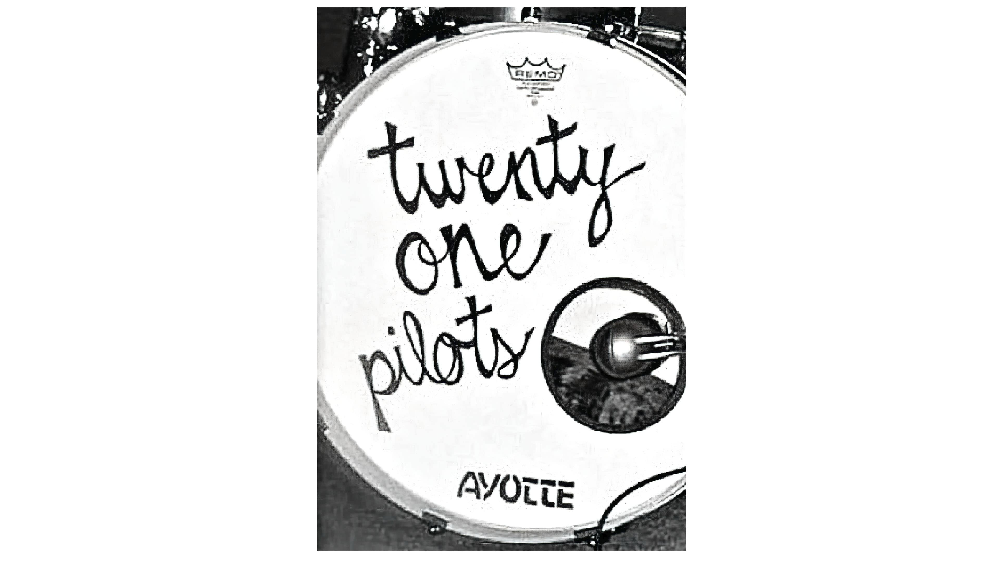
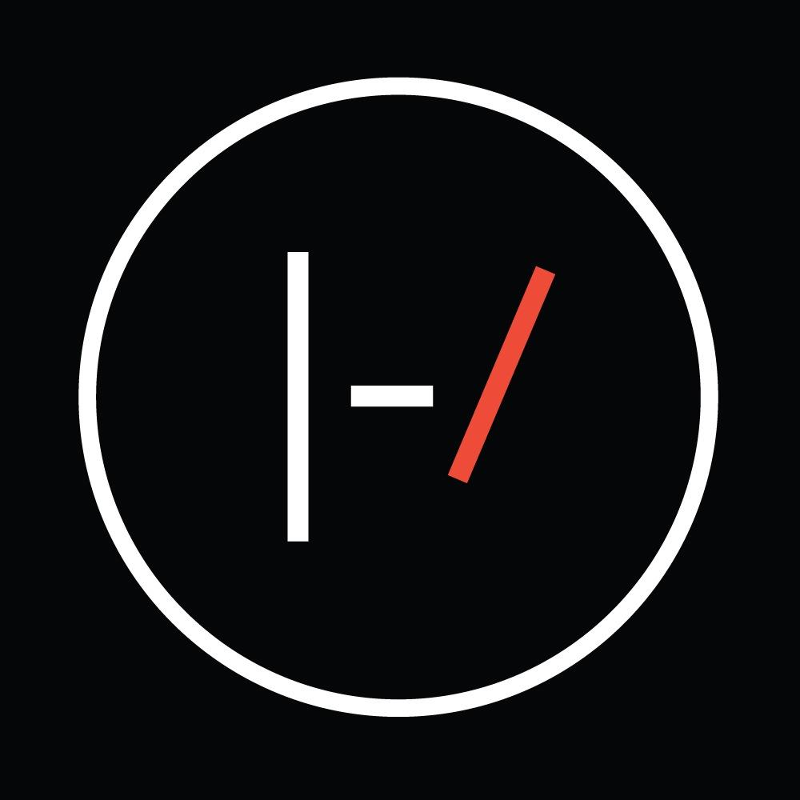
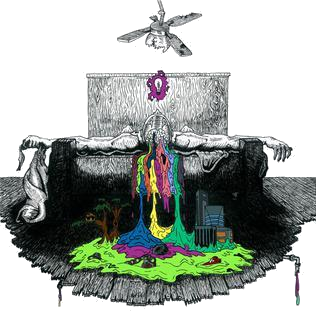

Es un dúo musical estadounidense originario de Columbus, Ohio, Estados Unidos; integrado actualmente por Tyler Joseph y Josh Dun. Alcanzaron el éxito al presentarse en grandes festivales como Lollapalooza, Bonnaroo, Boston Calling y Firefly. Originalmente estaba conformada por Tyler, Thomas y Salih
El nombre de la agrupación fue elegido por el vocalista Tyler Joseph, cuando estudiaba "All my sons", una obra de teatro de Arthur Miller; que trata sobre un hombre que se suicida después de de causar la muerte de veintiún pilotos durante la Segunda Guerra Mundial, porque a sabiendas les envió partes defectuosas por el bien de su negocio. Joseph explicó los temas de dilema moral de la historia, entre elegir la decisión fácil y la correcta resonó con él e inspiró el nombre y la formación de la banda. Mientras la historia es morbosa, Tyler descubrió una lección dentro de ella; le demostró que cada decisión que tome tendrá excelentes resultados o consecuencias nefastas. Joseph declaró: "Nos enfrentamos constantemente con decisiones. Muchas veces, las correctas toman más trabajo, lleva más tiempo ver el beneficio, son la ruta larga. Sabemos que para llegar a donde queremos estar y hacer lo que queremos hacer, a veces tenemos que hacer lo que no tenemos ganas de hacer. Se necesita mucho trabajo, y el nombre de la banda es un recordatorio constante de eso."

El 29 de diciembre de 2009 lanzaron su álbum debut-independiente, con el cual comenzaron un tour en Ohio. En 2010 la banda lanzó dos canciones inéditas oficialmente a su cuenta de SoundCloud. La primera "Time to Say Goodbye"; y un cover de "Jar of Hearts".
A mediados del 2011 Thomas y Salih abandonaron la banda debido a su apretada agenda, por lo que Joseph se unió con Josh Dun. En 2012, antes de firmar un contrato con Fueled By Ramen, sacaron dos álbumes de forma independiente, Twenty One Pilots (álbum homónimo) en 2009 y Regional At Best en 2011. En 2013, lanzaron su primer álbum de estudio, Vessel, el cual mantiene muchas de las canciones de RAB pero con mejor producción musical (Como en el caso de Lovely, Holding on to you, entre otras).
El grupo tuvo su primer éxito en las radios estadounidenses con "Holding On To You", que alcanzó el puesto 11 en la tabla Billboard Alternative Songs; adicionalmente, los sencillos Guns For Hands y Lovely alcanzaron el puesto 21 y 67 respectivamente en el Japan Hot 100.
En Marzo de 2018, su canción Hometown recibió una certificación Gold de la RIAA, convirtiendo a Blurryface (su segundo álbum de estudio) en el primer álbum de larga duración en tener todas sus canciones logrando al menos el disco de oro.
El 5 de octubre de 2018 se estrenó su tercer album de estudio, Trench junto con una nueva gira mundial, llamada "The Badito Tour", que comenzó el 16 de octubre de 2018.
El 9 de abril de 2020, se lanzó un nuevo sencillo: "Level Of Concern", junto con un video musical respectivo. Es una canción que la madre de Joseph lo convenció de hacer como resultado de la pandemia de coronavirus.
EL 8 de diciembre de 2020, durante la pandemia de COVID-19 fué lanzado el sencillo navideño "Christmas Saves the Year" a través de Fueled By Ramen; el sencillo expresa la idea de que incluso en un año turbulento, el optimismo todavía se puede encontrar en Navidad.
Estos son los distintos logos que han representado a la banda a través de los años.
| Logo | Años vigentes | Informacion relevante |
|---|---|---|
 |
2011-2015 | Según la explicación de Tyler, el logotipo está vinculado de alguna manera a la canción Kitchen Sink. Afirmó que el emblema es «algo que solo yo entiendo», y de esta manera, le dio un propósito. Para Tyler, el propósito comienza cuando «creas algo y solo tú sabes su significado». Diseñó el logotipo como un estímulo para que la gente creara. |
|  | 2015-2018 | Twenty One Pilots han cambiado de logo en cada disco, modificando ligeramente los esquemas de color y su estética. |
| 2018-PRESENTE | Para empezar, Tyler explica que el logo actual es una representación de algunas de las letras de “Trench” y la sensación de protección. “Es sobre la sensación de estar rodeado por algo que te protege. Sabía que quería ese logo que tuviera esa capa de protección extra“, explica sobre las barras adicionales. El logo también es una evolución de cómo se ha representado en el pasado. “Si miramos los dos anteriores y los juntamos crearía un logo de dos barras“, continúa. “Es una especie de continuación”. |
La discografía de Twenty One Pilots, dúo musical estadounidense de géneros hip hop alternativo, rock alternativo e indie pop, consta de cinco álbumes de estudio. Son estos:

Twenty One Pilots es el álbum de estudio debut homónimo de la banda estadounidense Twenty One Pilots, lanzado de forma independiente el 29 de diciembre de 2009. El álbum vendió 115,000 copias y alcanzó el número 139 en los EE. UU. Billboard 200. Es el único álbum que presenta el bajista Nick Thomas y el baterista Chris Salih antes de que ambos dejaran la banda en 2011.
Puedes escuchar el album aqui

Regional at Best (abreviado como RAB), es el segundo álbum lanzado de forma independiente por el grupo musical estadounidense Twenty One Pilots, publicado el 8 de julio de 2011.
El segundo álbum cambió de estilo musical respecto al primero, este teniendo elementos del indietronica, indie rock, electrónica y hip hop.Puedes escuchar el album aqui

Vessel es el tercer álbum del grupo estadounidense Twenty One Pilots, lanzado el 8 de enero del 2013. Es el primer álbum de estudio de la banda grabado con Fueled By Ramen, después de lanzar dos álbumes independientes, Twenty One Pilots (2009), y Regional At Best (2011). Este álbum no cambio mucho respecto al anterior, ya que fue una remasterizacion con mejor calidad del álbum anterior Regional At Best con algunas nuevas canciones y dejando las anteriores como bonus track.
Puedes escuchar el album aqui

Blurryface (a veces estilizado como BLVRRYFΛCE), es el cuarto álbum de larga duración y segundo álbum de estudio del dúo musical estadounidense Twenty One Pilots, lanzado el 17 de mayo de 2015, a través de Fueled by Ramen.
Al igual que su álbum anterior Vessel (2013), el álbum toma influencia de varios géneros, incluidos hip hop, rock, pop, reggae y indie. Líricamente, el álbum incorpora temas de salud mental, duda y religión. Contiene los sencillos exitosos "Stressed Out" y "Ride", que alcanzaron el top 5 en Billboard Hot 100.
Blurryface fue bien recibido por los críticos, quienes felicitaron sus temas y diversidad musical. Se considera que es el álbum revolucionario de la banda, convirtiéndose en el primero en alcanzar el número uno en Billboard 200. El álbum ha vendido más de 1.5 millones de copias en los Estados Unidos hasta abril de 2017. En 2018, Blurryface se convirtió en el primer álbum en la era digital en tener cada pista recibió al menos una certificación de oro de la Asociación de Industria Discográfica de Estados Unidos. El 15 de mayo de 2019, alcanzó el hit de estar en la lista Billboard Top 200 Album durante cuatro años, sin abandonar nunca la lista.
Puedes escuchar el album aqui

Trench (estilizado como TRENCH) es el quinto álbum del dúo estadounidense Twenty One Pilots y el tercero como dúo. El álbum fue lanzado el 5 de octubre del 2018. Cuenta con seis sencillos, los dos primeros, Nico and the Niners y Jumpsuit, fueron lanzados de manera simultánea el 11 de julio de 2018, Levitate fue lanzado como tercer sencillo el 8 de agosto, un cuarto sencillo, My Blood, fue lanzado el 27 de agosto. La canción Chlorine fue anunciada como el quinto sencillo el 22 de enero de 2019, y, por último, la canción The Hype, fue registrada como sencillo el 16 de julio de 2019, con su videoclip 10 días después. Este es el regreso del dúo tras un poco más de 1 año sin lanzar material nuevo desde su exitoso segundo álbum de estudio Blurryface (2015).
Puedes escuchar el album aqui
Volver al inicio